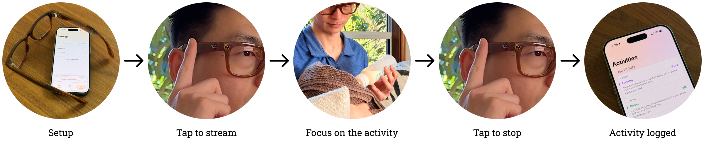

BabyCare: A Wearable Agent

Baby activity logging made easy with an agent created for your AI glasses.
I built a prototype agent that uses Ray-Ban Meta glasses to get context (image and audio) about the baby activity, then creates an activity timeline and shows insights on your mobile phone.
Traditionally: You would have to use a mobile app like Huckleberry, or What to Expect, to manually log everything into the app, from diaper change, poop color, sleep schedule to food consumption. You have to remind yourself to find time to log the activities afterwards. It creates cognitive pressure and takes precious time out of the already over-loaded new parents.
With this agent: You can just tap on the RBM to capture some context (a few images of what you are doing or a few words from you) and have the AI agent figure out what to note down, then organize the info into easily consumable data for you. It takes all the manual work out of your plate so you can focus on what actually matters - taking care of the new born.
Vision
Get rid of apps
I want to prove the idea that we can replace some, if not most of the apps we use today on a phone with agents on wearables. Let wearable agents be the fabrics to weave our physical and digital lives together.
Reduce friction of interaction
This is a proof of life of a wearable agent experience that shows a path towards frictionless interaction when we have multimodal input plus context.
Experience Flow


Privacy considerations
You are always in control
Initiating and stopping the capture process is user-controlled with a simple tap. A single tap on the temple arm begins capturing, and a subsequent tap concludes the capture. If you accidentally started the session or if sensitive information is involved, you can always stop and discard it by tapping the cancel button on the phone. Data from that session won't be sent to the AI model.
Async catch up
If you need to log an activity later, perhaps for a private moment or because you forgot to log it earlier, you can still tap the glasses and verbally provide an update. The audio inference will take over image inference and the agent will be able to log the activity based on what you told it instead of what it sees.
Next Steps: Revisit for future SDKs
Currently the SDK (V0.6) doesn't expose the capture button on the glasses. Starting/stopping streaming and capturing a photo can only be done via a GUI button on the app. This creates extra friction for the beginning and the end of the experience because users have to touch the phone before controlling the glasses. Once the Meta wearable SDK opens up for more hardware interactions, I will come back to improve the interaction and reduce the friction to use this agent.
A bigger picture
I'm not a developer and this prototype took me and my AI partner a few weeks to build. However I can see a future where such agents could be built much simpler and faster. However niche my need is, there will be an agent perfect for the job.
Instead of apps, if we have multiple agents on our wearables in the future, how would they be organized differently than the world of apps we live in today? I wrote up a short article about the relationship between user, agent and OS. I hope it will spark more discussion on this topic.